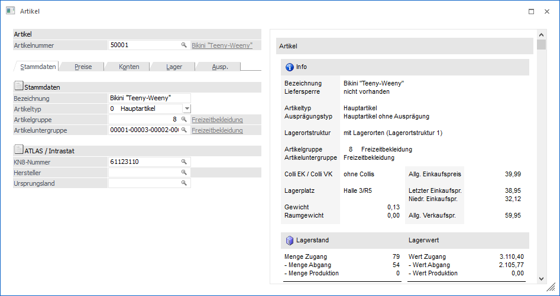
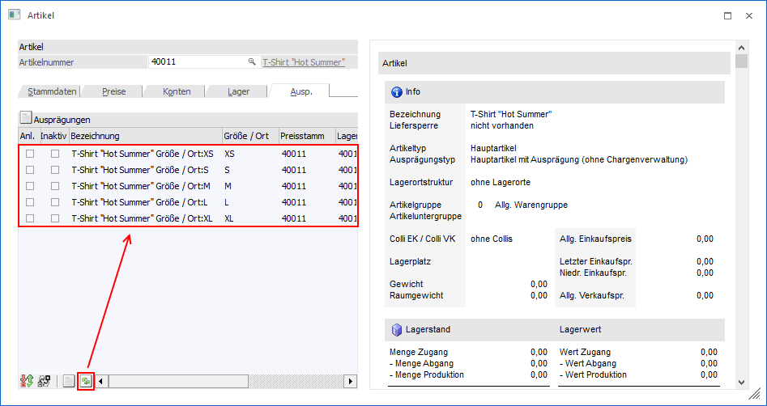
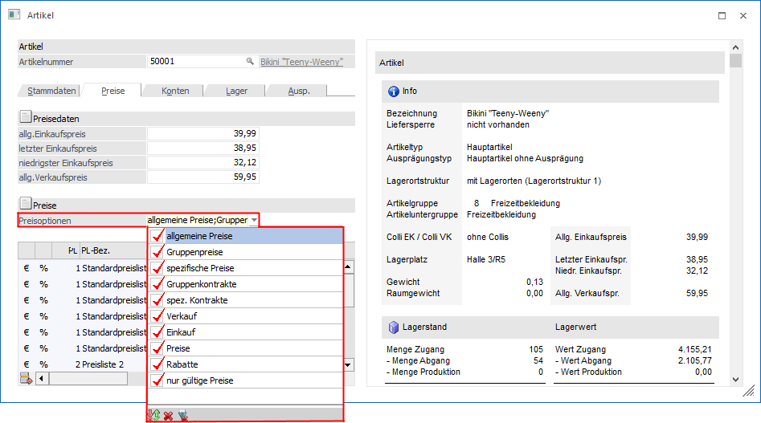
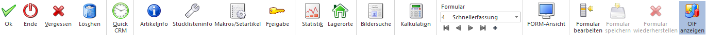
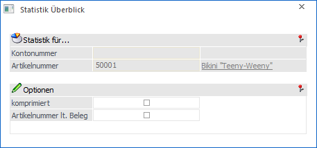

Dieses Fenster wird geöffnet, wenn im Artikelstamm ein alternatives Formular zur Bearbeitung von Stammdaten ausgewählt wurde.
Hinweis
Bei Nutzung der FORM-Ansicht wird der Artikelstamm in einem "Lesemodus" geöffnet, d.h. es können bestehende Artikel aufgerufen und kontrolliert werden, ein Ändern bzw. eine Neuanlage ist nicht möglich. Hierfür muss zunächst mit Hilfe des Buttons "Editieren" der "Bearbeitungsmodus" aktiviert werden.
Ø Formular
Über die Auswahlbox "Formular" kann gewählt werden, in welcher Form der Stammdatensatz bearbeitet werden soll. Wenn die Option "0 - Allgemein" gewählt wird, dann wird wieder in die "Normalansicht" mit allen Eingabefeldern zurückgeschalten.
Hinweis
Die Definition der Formulare für die individuelle Gestaltung erfolgt im Programm WinLine START über den Menüpunkt "Vorlagen - Vorlagen Anlage - Individuelle Formulare". Das Ergebnis davon könnte z.B. so aussehen:

Bei der Nutzung von individuellen Formulare sind die folgenden Besonderheiten zu beachten:
Ø Tabelle "Ausprägungen"
Der Anzeigen-Button für das Füllen der Tabelle mit allen möglichen Ausprägungen ist in der Tabelle integriert und nicht im Fenster.

Achtung
Die Checkbox "ohne Ausprägung 2" wird in individuellen Fenstern nicht unterstützt!
Ø Tabelle "Preise"
In der Preistabelle stehen alle Eingabefelder, die im "normalen" Artikelstamm in der Detailansicht vorhanden sind, zur Verfügung. Sie werden jedoch standardmäßig nicht angezeigt und müssen bei Bedarf über das Kontextmenü "Spalten anzeigen / verstecken" angezeigt werden. Diese Eingabefelder stehen dann auch im Standard-Artikelstammfenster in der Preistabelle zur Verfügung. Zusätzlich ist auf folgendes zu achten:
ü Anzeige von Preisen
Es werden
im individuellen Fenster in der Preistabelle grundsätzlich alle Preisarten
angezeigt die beim letzten Aufruf des Artikelstamms im Standardfenster angezeigt
und benutzerspezifisch gespeichert wurden. Über das Feld "Preisoptionen"
(einzubauen über die verwendete Vorlage) kann individuell bestimmt werden,
welche Preise angezeigt werden sollen.

ü Editieren von Preisen
Beim
Aufruf des Artikelstamms zum Editieren von Preisen aus der Belegerfassung
(WinLine FAKT - Belegerfassung - Belege erfassen - Belegmitte - F8-Taste in der
Spalte "Preis" - in der Preis-Information den Button "Editieren") wird das
individuelle Formular nur geöffnet, wenn dort die Preistabelle vorhanden ist und
der ausgewählte Preistyp angezeigt wird. Ansonsten wird der Artikelstamm im
Standardfenster geöffnet.
ü Neuanlage eines Artikels
Bei
Neuanlage eines Artikels wird beim Bestätigen des "allg. Einkaufspreises" bzw.
"allg. Verkaufspreises" der entsprechende Eintrag in die Preistabelle eingefügt.
Voraussetzung dafür ist, dass diese Tabelle im individuellen Formular vorhanden
ist. Ist die Preistabelle nicht im individuellen Formular vorhanden werden
Preislisteneinträge für den "allg. Einkaufspreis" und "allg. Verkaufspreis" erst
bei dem Speichern des Artikels geschrieben.
Buttons

Ø Ok
Durch Anwahl des Buttons "Ok" bzw. der Taste F5 werden die vorgenommenen Änderungen bzw. die Neuanlage abgespeichert.
Hinweis 1
Durch die Tastenkombination SHIFT + F5 erfolgt eine Zwischenspeicherung des Artikels.
Hinweis 2
Bei Nutzung der FORM-Ansicht wird zunächst der Button "Editieren" dargestellt. Durch dessen Anwahl gelangt man in den "Bearbeitungsmodus", in welchem der Button "Ok" zur Verfügung steht.
Ø Ende
Bei Anwahl des Buttons "Ende" bzw. der Taste ESC wird der Programmbereich verlassen und alle nicht gespeicherten Änderungen verworfen.
Ø Vergessen
Durch Anwahl des Buttons "Vergessen" bzw. der Taste F4 wird die Anzeige des ausgewählten Artikels beendet und der Fokus auf das Feld "Artikelnummer" gesetzt. Alle vorgenommenen Änderungen werden dabei verworfen.
Ø Löschen
Durch Anklicken des "Löschen"-Buttons wird der Artikel gelöscht. Voraussetzung dafür ist, dass für den Artikel keine Lagerbewegungen und keine Belege erfasst wurden.
Ø Quick CRM
Wenn dieser Button angeklickt wird, kann ein CRM-Fall zu dem gerade geöffneten Artikel erfasst werden. Voraussetzung dafür ist:
ü Es muss eine gültige CRM-Lizenz vorhanden sein.
ü Der Benutzer muss ein CRM-Benutzer sein.
ü Es müssen entsprechende CRM-Aktionen bzw. CRM-Workflows mit der Kennzeichnung "QUICK CRM" angelegt sein.
Hinweis
Es werden im WinLine Standard 9 CRM-Aktionen (CRM-Gruppe "100") mitgeliefert.
Ø Artikelinfo
Durch Anwahl des "Info"-Buttons wird die "Artikel Info" geöffnet. An dieser Stelle erhält man detaillierte Informationen zu dem angelegten Artikel (z.B. Lagerstand, Lagerwert, Zugänge, Abgänge, letzte Lagerbewegungen, etc.). Drückt man während der Anwahl des Buttons die SHIFT-Taste, so wird die "Artikelinformation" in der Applikation WinLine INFO geöffnet. Dieser Button ist auch mittels den Shortcuts ALT + i (öffnet die "Artikel Info" in WinLine FAKT) oder SHIFT + ALT + i (öffnet die "Artikelinformation" in WinLine INFO) anwählbar.
Ø Stücklisteninfo
Mit diesem Button wird das Fenster "Makro-Info" geöffnet, in welchem alle Stücklisten angezeigt werden, die den aktuellen Artikel enthalten. Des Weiteren werden im neuen Fenster im Register "Detailliert" alle Artikel aufgelistet, die in der jeweils selektierten Stückliste enthalten sind.
Ø Makros/Setartikel
Mit diesem Button wird ein neues Fenster geöffnet, worin alle Artikelmakros aufgelistet werden, die den aktuellen Artikel enthalten. Im Sub-Register "Detailliert" im neuen Fenster werden alle Artikel aufgelistet, die im jeweils selektierten Makro enthalten sind. Zusätzlich werden alle Artikel aufgelistet, die den gleichnamigen Textbaustein verwenden.
Ø Freigabe
Durch Anklicken des "Freigabe"-Buttons kann in dem extra Fenster "Freigabe" der Freigabestatus des aktivierten Artikels geändert werden (nähere Informationen entnehmen Sie bitte dem Kapitel "Freigabe" bzw. dem WinLine START - Handbuch).
Ø Statistik
Durch Anklicken des Buttons "Statistik" erhält man eine Übersicht über die Verkaufszahlen der letzten 3 Jahre.
Hinweis
Über das geöffnete Fenster "Statistik Überblick" kann die Auswertung geändert werden (z.B. zum Darstellen der Einkaufszahlen).

Ø Lagerorte
Bei Anwahl des Buttons "Lagerorte" wird das Programm "Artikel - Lagerorte" aufgerufen und die aktuellen Lagerorte des Artikels dargestellt.
Ø Bildersuche
Mit Hilfe dieses Buttons kann ein Bild für den Artikel gesucht, ausgeschnitten und zugeordnet werden. Hierbei wird zunächst über ein Menü die Quelle des Bilds definiert. Folgende Varianten stehen zur Verfügung:
ü Bildersuche
Es wird das
Programm "Bildersuche" geöffnet.
ü Bildersuche - WinLine
Es wird
das Programm "Bilder in Datenbanken" geöffnet, über welches eine Grafik
ausgewählt werden kann.
ü Bildersuche - Datenträger
Es
wird der Öffnen-Dialog von Windows geöffnet, über welchen eine Grafik ausgewählt
werden kann.
Ø Kalkulation
Mit dem Button "Kalkulation" wird das Fenster "Kalkulation" geöffnet, in welchem auf Basis eines Kalkulationsschemas der Verkaufspreis eines Artikels berechnet werden kann.
Ø Formular
Über die Auswahlbox "Formular" kann gewählt werden, in welcher Form der Stammdatensatz bearbeitet werden soll. Wenn die Option "0 - Allgemein" gewählt wird, dann wird wieder in die "Normalansicht" mit allen Eingabefeldern zurückgeschalten.
Hinweis
Die Definition der Formulare für die individuelle Gestaltung erfolgt im Programm WinLine START über den Menüpunkt "Vorlagen - Vorlagen Anlage - Individuelle Formulare".
Ø VCR-Buttons
Über die so genannten VCR-Buttons kann durch Mausklick zwischen den Datensätzen geblättert werden.
ü  Damit kann der
erste Datensatz angesprochen werden.
Damit kann der
erste Datensatz angesprochen werden.
ü  Damit kann der
vorherige Datensatz angesprochen werden.
Damit kann der
vorherige Datensatz angesprochen werden.
ü  Damit kann der
nächste Datensatz angesprochen werden.
Damit kann der
nächste Datensatz angesprochen werden.
ü  Damit kann der
letzte Datensatz angesprochen werden.
Damit kann der
letzte Datensatz angesprochen werden.
ü  Damit wird die
nächste freie Nummer für die Neuanlage gesucht.
Damit wird die
nächste freie Nummer für die Neuanlage gesucht.
Hinweis
Beim Blättern zwischen den Artikel-Datensätzen werden Ausprägungen standardmäßig "überblättert", d.h. es wird von einem Hauptartikel zum nächsten geblättert. Sollten auch Ausprägungen berücksichtigt werden, so muss beim Blättern zusätzlich die STRG-Taste gedrückt werden.
Ø FORM-Ansicht
Mit Hilfe dieses Buttons kann die sogenannte "FORM-Ansicht" aktiviert werden. Im Gegensatz zur klassischen Eingabe unterstützt diese folgende Funktionen:
ü Lese- und Bearbeitungsmodus
ü Responsive HTML-Design
ü Erweiterte Layout-Komponenten
Hinweis
Die FORM-Ansicht basiert immer auf der Definition des individuellen Formulars. Die Gestaltung des Layouts kann wiederum in der WinLine INFO über den Menüpunkt "FORM - Designer" erfolgen.
Ø Formular bearbeiten
Durch Anwahl des Buttons "Formular bearbeiten" wird das ausgewählte Formular (d.h. die Vorlage) in einen Bearbeitungsmodus versetzt (Felder können verschoben, entfernt oder neue einfügt werden). Durch eine erneute Anwahl des Buttons wird der Modus wieder verlassen.
Hinweis
Der Button kann nur angewählt werden, wenn das Objektrecht "bearbeiten" (oder höher) für das individuelle Formular vorhanden ist.
Ø Formular speichern
Mit Hilfe dieses Buttons können vorgenommene Formularänderungen gespeichert werden.
Ø Formular wiederherstellen
Wenn Formularänderungen getätigt wurden, dann kann durch Anwahl des Buttons "Formular wiederherstellen" das ursprüngliche Formular wiederhergestellt werden.
Ø OIF anzeigen
Mit Hilfe dieses Buttons kann der OIF-Bereich im rechten Bereich des Fensters aktiviert bzw. deaktiviert werden.
Hinweis
Eine Aktivierung ist nur möglich, wenn in der Vorlage die Option "OIF anzeigen" aktiviert wurde.